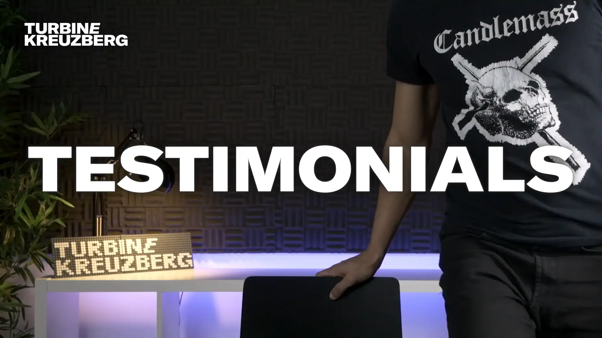
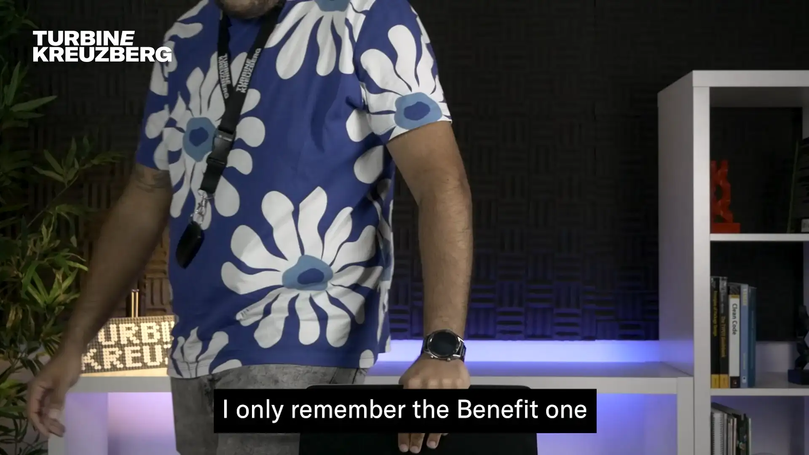
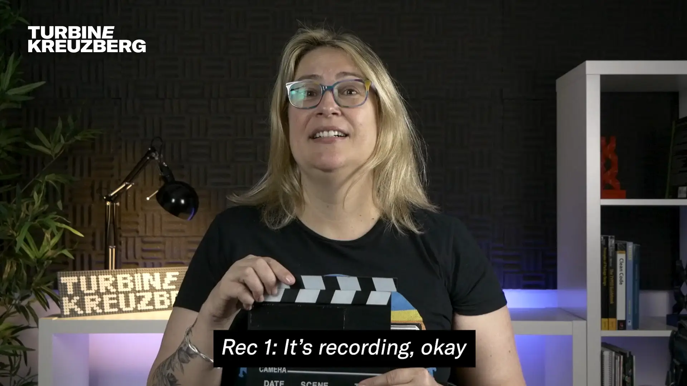

David HerdeiroBack to the beginning2025 Jan. 10 Anatomy of a Testimonial Video
If there's a video that I'm particularly proud of pulling off during my time at Turbine Kreuzberg it's the Portugal's
Team Testimonial Video, from 2023. This was a project that I had been wanting to do for a long time, and finally
got the chance to do so. It's not, by any means, an original concept, as it's a common practice in the industry as
well as a great opportunity to show the team's faces and voices to the world.
Have a look at the video, and check my breakdown below!
* * *
Breaking down the main goal — show the team's faces that you usually don't see:
From the start, the team defined that the video should have a relaxed tone, with a lot of smiles and laughs, so it
would reflect the team's diversity and the "what is it like to work at the company."
Opening the video, you're watching a static shot of people getting ready to get recorded - this helps to set the
mood. Just look how casual and relaxed they are! You can also see the difference in personalities, and that for
us, was a must-have. During our brainstorming sessions, we decided that the title should be masked by the
interviewees, giving a sense of depth to the title. However, time constraints made us change our minds. (Maybe
it's time that Adobe Premiere adds an AI-powered mask tool?)



Once all seven interviewees appear on screen, the video jumps to the introductions. To ensure that the viewer knew
who was talking, their names and roles were added on the screen and one by one, everyone has the chance to
introduce themselves by answering these same questions:
Who are you?
And what do you do?
Introductions made, time to move on to the main part of the video: the interviews.
Every question has its own time slot and it is presented with a blurred background, which helps keeping the viewer
engaged and focused on the content.
The questions were defined beforehand, keeping the thought of "what could give out the best insight on the team's
daily life and company culture?". They we constructed in a way that any and all answers would be positive, always.
And so, the base question is "What was the best part of working at the company?":
The questions were:
What does Turbine Kreuzberg mean to you?
What is the benefit that you love the most?
Who's the best PingPong player? (to bring back the playful mood)
What did you learn working here?
What are your expectations for the future?
Finally, the video ends same way it starts — a relaxed moment of the interviewees saying goodbye and leaving the
camera frame. * * *
In technical terms, this was an easy project. The hardware used was the one previously used on past videos - a
Panasonic Lumix G85 with a 12-55mm lens, and a Rode VideoMic Go II attached to the camera. By itself, that's a
simple and fast setup. Two softboxes were also being used to light the interviewees, along with a LED strip
mounted on the background shelf to give some depth to the image.
There was, of course, some logistics applied to such recording. We had to make sure that everyone was available
and on site, which isn't easy as there are several people working fully remote hundreds of kilometers away.
Luckily, the company had a team event happening that weekend, and the team took advantage of that, since most of
the Portugal team was on site.
Editing was done on Adobe Premiere Pro. As there was tens of minutes of footage, the "cuting and gluing" took
longer than usual. The most challenging part was definitelly choosing the better-fitting answers to each question.
If you have a keen eye you might have noticed that not everyone got featured for every question, which was simply
a constraint of ensuring that the video wasn't too long.
The remaining editing, color grading and sound mixing were done with my colleague Ema Gonçalves, who was a huge help on the
project.
All and all, this was definitely a fun and fruitful project to work on, and it keeps me looking forward to the
next one!